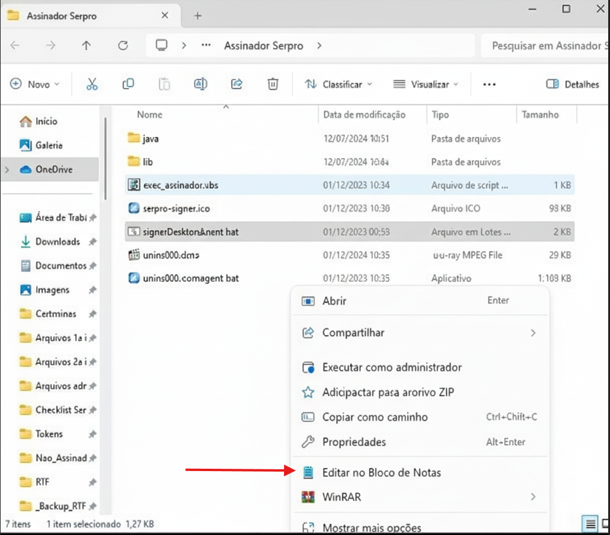
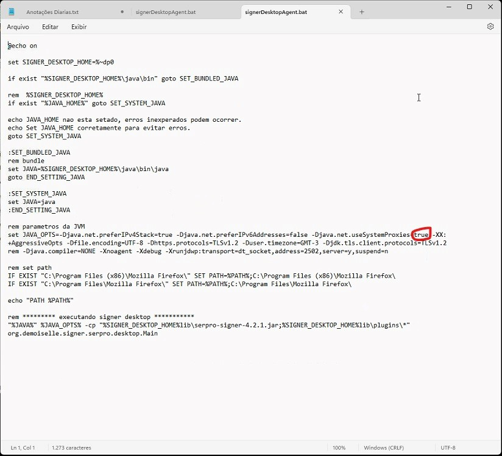

Erro Assinador Serpro (ASSPR0017)
- O erro indica falha ao iniciar os serviços web do assinador-desktop.serpro.gov.br.

Abrir Configurações do Assinador
- Clique no atalho do Assinador Serpro e escolha abrir local do arquivo.
- Localize o arquivo `signerDesktopAgent.bat`.
- Clique com o botão direito no arquivo e escolha Editar no Bloco de Notas. 

- Dentro do Bloco de Notas, procure pela linha que define as configurações de Proxies.
- Altere o valor dessa configuração de
trueparafalse.

- Salve e feche o arquivo.
- Reinicie o Assinador Serpro. O erro ASSPR0017 deve ser resolvido.